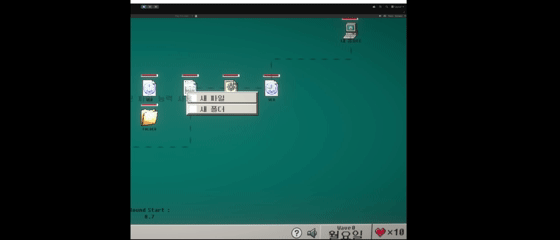
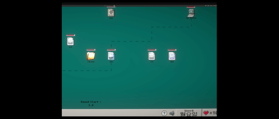

PROJECT REPORT
PROJECT REPORT // FILE_TOWER_DEFENSE
Systems Engineering: UI-to-GameObject 리팩토링, 통합 입력 시스템 및 그리드 아키텍처
File Tower Defense 프로젝트의 코어 시스템 설계를 담당하며, 유니티의 좌표계 특성을 분석한 아키텍처 재설계부터 대규모 객체의 입력 처리, 동적 버프 시스템, 그리고 그리드 기반 배치 로직까지 전반적인 시스템 개선 과정을 기록한 리포트입니다.
1. 시스템 리팩토링 및 개선
1.1 UI(RectTransform)에서 GameObject(Transform) 기반 전환
초기 설계에서는 윈도우 바탕화면의 아이콘 느낌을 살리기 위해 모든 파일 유닛을 UI 시스템(RectTransform)으로 구축했습니다. 그러나 프로젝트가 고도화됨에 따라 다음과 같은 한계에 직면했습니다.
- 좌표계 종속성: 캔버스의 앵커/피벗 설정 및 해상도에 따라 월드 좌표가 상대적으로 변하여 게임 월드 내 정밀한 위치 계산과 사거리 판정이 매우 까다로움.
- 연산 오버헤드 (Canvas Rebuilding): 유닛의 움직임, 호버 효과, 드래그 등의 UI 요소가 갱신될 때마다 Unity 내부에서 Canvas Rebuild가 강제로 유발되어 CPU 프레임 드랍 발생.
- 물리 엔진의 부재: 월드 좌표 기반의 바이러스(적)와 UI 유닛 간 물리 충돌 판정을 위해 매 프레임
Camera.WorldToScreenPoint등의 물리-화면 좌표 변환 함수 호출 비용 발생.
RectTransform (UI)
- 앵커·피벗 기반 좌표 종속성
- 빈번한 Canvas Rebuild 연산 부하
- 과도한 화면-월드 좌표 변환 비용
Transform (World)
- 독립적인 절대 2D 직교 좌표계
- Canvas Rebuild 오버헤드 0% (완전 배제)
- Physics 2D 물리 엔진 및 콜라이더 직결
이를 해결하기 위해 모든 유닛을 GameObject(Transform) 기반으로 전면 교체하여 월드 좌표계로 통일하였으며, Physics2D와의 직접적인 호환성을 확보하여 불필요한 연산을 제거하고 성능을 극적으로 최적화했습니다.
1.2 GameObjectGridLayout: 커스텀 레이아웃 엔진
화면 해상도에 맞춰 그리드의 간격과 셀 크기를 동적으로 계산하는 레이아웃 엔진을 구축했습니다. 유니티의 기본 GridLayoutGroup은 UI(Canvas) 전용 컴포넌트이므로, 일반 월드 공간 GameObject를 위해 카메라 크기에 맞게 자동으로 셀 크기를 스케일링하고 하단 작업표시줄 영역을 확보하는 커스텀 컴포넌트 GameObjectGridLayout을 직접 개발했습니다.

(Columns: 14, Rows: 8, Fit To Screen: On, Bottom Offset Ratio: 0.1)

(하단 UI 여백 10% 제외 후 가용 영역 14×8 셀 자동 피팅)
- 컴포넌트 중심의 유연한 제어: 에디터 인스펙터에서 행과 열(
Columns: 14,Rows: 8), 패딩 및 스페이싱을 설정하면 오르토그래픽 카메라의 가로·세로 월드 크기를 실시간 계산하여 최적의 셀 크기(Cell Size)를 자동으로 도출합니다. - 실제 초록색 그리드(World Grid) 영역: 씬 뷰 화면에 초록색 라인으로 표시되는 격자가 실제 인게임 파일 유닛과 바이러스가 배치·이동하는 물리적 그리드입니다.
Bottom Offset Ratio(0.1)설정을 통해 하단 작업표시줄 UI 영역(약 10%)을 비워두고, 상단 가용 영역에만 정확히 14×8 격자가 피팅되도록 중심점을 자동 보정합니다.
2. 파일/바이러스/UI 입력 및 상호작용 시스템
수많은 유닛이 각자 Update()에서 마우스 충돌을 검사하는 것은 비효율적이고 관리하기 어렵다고 판단했습니다. 이를 개선하기 위해 Mediator 패턴을 도입하여 InputManager가 모든 마우스 입력을 중앙 집중식으로 수집·판정하고, 상호작용 중재자인 InteractionHandler가 유닛의 선택 및 드래그 상태를 통합 관리하며, IInteractable 인터페이스를 구현한 대상 객체에게만 이벤트를 안전하게 전파하도록 설계했습니다.
2.1 중앙 집중식 입력 아키텍처
InputManager (입력 수신 & 좌표 보정)
CONTROLLERIs Pointer Over UI? (UI 포인터 검사)
InputState 머신 판정
InteractionHandler (이벤트 일괄 디스패치)
MEDIATORIInteractable Objects (OnClick / OnDrag / OnSelected 실행)
EXECUTION
[DEMO] InputManager 기반 마우스 호버 및 클릭 감지
객체 중첩 판정 알고리즘
마우스 아래에 여러 유닛이나 바이러스, 혹은 UI 판정이 겹쳐있을 때, 다음과 같은 우선순위 기준을 사용하여 모호함을 해결합니다.
- UI 레이어 우선:
EventSystem.current.IsPointerOverGameObject()를 통해 UI 상호작용 우선 처리. - 물리 레이어 필터링:
Physics2D.RaycastNonAlloc을 활용하여 쓰레기 메모리(GC Alloc) 없이 감지된 콜라이더 배열을 가져옴. - 정렬 레이어(Sorting Order) 정렬: 감지된 객체들의
SpriteRenderer내Sorting Layer ID및Order in Layer값을 비교하여 카메라와 가장 가까운(최상단에 렌더링된) 오브젝트를 타깃으로 최종 선택.
2.2 IInteractable 인터페이스 기반 확장성
클릭 및 드래그 상호작용이 필요한 모든 인게임 오브젝트(유닛 파일, 바이러스 등)는 IInteractable 인터페이스를 상속받아 유연하게 확장할 수 있습니다.

[DEMO] IInteractable 상속 객체의 실시간 마우스 드래그 & 배치 흐름
코드 보기: IInteractable 인터페이스
// IInteractable.cs: 인게임 오브젝트(파일/바이러스) 통합 입력 인터페이스
public interface IInteractable
{
GameObject targetObj { get; }
Transform transform { get; }
Sprite TooltipImg { get; } // 툴팁은 클래스로 만들까 고민
string ToolTipDes { get; }
// 선택 상태 관리
bool IsSelectable { get; }
bool IsDraggable { get; }
bool IsTooltipEnabled { get; }
// 이벤트 메서드
void OnHoverEnter(); // 마우스가 객체 위로 올라올 때 (ToolTip 타이밍 리셋용)
void OnHoverExit(); // 마우스가 객체에서 벗어날 때 (ToolTip 숨김)
void OnClickEnter(); // 마우스 버튼을 누를 때
void OnClickExit(); // 마우스 버튼을 뗄 때
void OnBeginDrag();
void OnDrag(Vector2 mouseDelta);
void OnEndDrag();
void OnClick(); // 클릭 처리
void OnDoubleClick(); // 더블클릭 처리
void OnRightClick(); // 우클릭 처리
void OnSelectSingle();
// 선택 상태 표시
void OnSelected(bool isSelected);
}3. 그리드 기반 오브젝트 배치 시스템
3.1 FileGrid: 데이터 중심의 지능형 셀 매니저
FileGrid는 단순한 위치 정보 홀더가 아니라, 유닛 배치 상태와 해당 셀에 작용 중인 오라(버프) 목록을 독자적으로 관리하는 지능형 컨테이너입니다.
- HashSet 기반 버프 소스 관리: 현재 그리드 공간에 영향을 주는 버프 제공 유닛의 목록을
HashSet<File_Base>로 관리하여 버프의 중복 적용을 제거하고 $O(1)$의 빠른 조회 속도를 유지합니다. - 유닛 탈부착 시 자동 스탯 갱신: 유닛이 배치되거나 이탈할 때 그리드에 축적된 버프 목록을 분석하여 대상 유닛의 스탯을 실시간으로 갱신해 줍니다.
3.2 원자적 배치 트랜잭션 (Transactional Pattern)
드래그 앤 드롭으로 유닛의 그리드 위치를 옮길 때 발생할 수 있는 데이터 불일치 및 예외 상황을 방지하기 위해, 데이터베이스의 트랜잭션 개념을 차용한 원자적 배치(Atomic Placement) 파이프라인을 구축했습니다. 탐색/검증(Validation) ➔ 확정(Commit) ➔ 복구(Rollback) 흐름을 단일 프로세스로 통합하여 상태 결함을 원천 차단합니다.
1. Search & Validation (목표 셀 탐색 및 검증)
VALIDATE드롭 좌표 기반 목표 그리드 식별 (인접 3x3 탐색) ➔ 유효 영역 및 장애물/기존 유닛 점유 여부 판정
배치 가능 여부 판정 (Can Place Unit?)
• 이전 그리드 점유 해제 (OldGrid.Remove)
• 신규 그리드 점유 등록 (NewGrid.Set)
• 스탯 및 오라 버프 실시간 재계산
• 목표 셀 위치로 유닛 좌표 확정
• 유효하지 않은 셀 또는 장애물 충돌
• 배치 트랜잭션 즉시 취소
• RestoreOriginalPosition() 호출
• 드래그 전 원래 그리드 위치로 안전 복원
3.3 공간 분할 기반 국소 탐색 시스템
마우스 드래그 좌표로부터 목표 그리드 인덱스를 수학적으로 산출하고, 해당 인덱스를 중심으로 인접한 3×3 그리드 셀(총 9개)만을 국소 탐색하여 최적의 그리드를 신속하게 판정합니다.
코드 보기: 3×3 국소 탐색 루프 (FindClosestGridInRange)
타깃 인덱스(centerX, centerY)를 기준으로 dx, dy를 각각 -1부터 1까지 순회하며 인접 9개 셀에 대해서만 유효성 검사 및 최단 거리 비교를 수행합니다.
// FileGridManager.cs: 3x3 국소 탐색 루프
private FileGrid FindClosestGridInRange(Vector2 worldPos, int centerX, int centerY)
{
float minDistSqr = float.MaxValue;
FileGrid closestGrid = null;
for (int dx = -1; dx <= 1; dx++)
{
for (int dy = -1; dy <= 1; dy++)
{
int x = centerX + dx;
int y = centerY + dy;
if (IsValidGridIndex(x, y))
{
FileGrid grid = gridArray[x, y];
SearchClosestBetter(grid, worldPos, ref minDistSqr, ref closestGrid);
}
}
}
return closestGrid;
}3.4 플래그 기반 확장 가능한 검색 시스템
그리드를 검색할 때 '비어 있는 곳', '장애물이 없는 곳', '이미 아군이 배치된 곳' 등 다양한 복합 조건을 가변 인자(params) 형태로 손쉽게 검색할 수 있도록 SearchGridFlag 가변 필터링 시스템을 설계했습니다.
파일 유닛이 배치되어 있는 셀(GetFileUnit() != null)만을 탐색 대상으로 한정
유닛이 배치되지 않은 빈 셀만을 필터링 (신규 유닛 설치 가능 공간 검증)
시스템 장애물(obstacleObject != null)이 위치한 셀을 식별
장애물이 없어 객체 배치 및 투사체 궤적 형성이 가능한 클린 셀
조건 필터링 없이 레이아웃 내 모든 셀을 탐색 범위로 처리
public enum SearchGridFlag
{
Occupied, // 점유
NotOccupied, // 비점유
Obstacle, // 장애물이 존재하는 그리드만
NotObstacle, // 장애물이 존재하지 않는 그리드만
None,
}코드 보기: FindFlagGridWorld
public FileGrid FindFlagGridWorld(Vector2 worldPos, params SearchGridFlag[] flags)
{
if (gridArray == null || flags == null || flags.Length == 0)
return null;
float bestDistSqr = float.MaxValue;
FileGrid bestGrid = null;
foreach (FileGrid grid in gridArray)
{
if (grid == null) continue;
// 플래그 조건 체크
bool isOccupied = grid.GetFileUnit() != null;
bool hasObstacle = grid.obstacleObject != null;
bool isMatch = true;
foreach (SearchGridFlag flag in flags)
{
switch (flag)
{
case SearchGridFlag.Occupied:
if (!isOccupied) isMatch = false;
break;
case SearchGridFlag.NotOccupied:
if (isOccupied) isMatch = false;
break;
case SearchGridFlag.Obstacle:
if (!hasObstacle) isMatch = false;
break;
case SearchGridFlag.NotObstacle:
if (hasObstacle) isMatch = false;
break;
case SearchGridFlag.None:
break;
}
if (!isMatch) break;
}
if (!isMatch) continue;
SearchClosestBetter(grid, worldPos, ref bestDistSqr, ref bestGrid);
}
return bestGrid;
}4. 다형성 기반 동적 버프 시스템
4.1 Observer 패턴 기반 버프 자동 전파
파일 유닛이 그리드 상에 배치되거나 이동할 때, 버프 영역을 동적으로 계산하고 전파하기 위해 Observer 패턴 구조를 활용했습니다.
배치된 유닛이 버프 제공체인가? (Is Buff Source?)
• 사거리 내 모든 인접 FileGrid 탐색
• 그리드에 버프 소스 등록 (Grid.AddBuffSource)
• 이미 배치된 유닛에 즉각 버프 전파 (ApplyBuff)
• 진입한 FileGrid의 활성 버프 풀 조회
• 축적된 _activeBuffSources 목록 확인
• 진입한 유닛에게 모든 버프 일괄 적용 (ApplyBuff)
✨ Observer 기반 결합도 분리 (Decoupled Sync)
LIFECYCLE
유닛 간 직접 참조 대신 FileGrid가 중계자(Subject) 역할을 수행하여, 유닛의 배치·진입·이탈·사망 시 버프 스탯이 누락 없이 자동 갱신 및 원복됩니다.
- 버프 전파 및 라이프사이클 핵심:
- 오라 영역 등록 (Provider): 버프 특성을 가진 유닛이 배치되면 사거리 내
FileGrid셀들에 자신을 소스로 등록하고, 기배치된 유닛에 즉시 버프를 전파합니다. - 진입 시 자동 적용 (Consumer): 일반 유닛이 버프 영역의 그리드로 진입하면,
FileGrid에 누적되어 있던 버프 데이터(_activeBuffSources)를 즉각 전달받아 적용합니다. - 이탈 및 사망 시 자동 원복 (Cleanup): 버프 유닛이 이동하거나 사망하면 해당 그리드에서 소스가 제거(
RemoveBuffSource)되며, 영향받던 유닛의 스탯이 즉시 원복됩니다.
코드 보기: FileGrid 옵저버 기반 버프 전파 및 수혜 파이프라인
// FileGrid.cs: Observer 패턴 기반 핵심 버프 전파 및 수혜 로직
public class FileGrid : MonoBehaviour
{
private File_Base fileUnit;
// 해당 그리드에 영향을 미치는 버프 제공자 목록 (중복 제거 O(1))
private readonly HashSet<File_Base> _activeBuffSources = new HashSet<File_Base>();
#region Core Buff Logic
// 버프 유닛(오라) 배치 시 그리드에 소스 등록 및 기존 유닛 버프 전파
public void AddBuffSource(File_Base source)
{
// ...
}
// 버프 유닛 이탈/사망 시 소스 제거 및 버프 원복
public void RemoveBuffSource(File_Base source)
{
// ...
}
// 단일 버프 소스로부터 대상 유닛에 버프 스탯 부여 또는 해제
private void ApplyBuffFromSource(File_Base target, File_Base source, bool apply)
{
// ...
}
// 신규 유닛 진입/이탈 시 그리드에 축적된 모든 버프 일괄 적용/원복
private void ApplyGridBuffs(bool apply)
{
// ...
}
#endregion
}4.2 컴포넌트 기반 버프 기본 형태 (Buff_Base)
다양한 종류의 버프(스탯 강화, 슬로우, 힐링 도트 등)를 객체지향적으로 확장할 수 있도록, 유니티의 컴포넌트(MonoBehaviour) 기반 추상 클래스 Buff_Base를 설계했습니다. 유닛에 버프가 부착될 때 필요한 기본 데이터 모델 바인딩과 중복 파티클 방지 메커니즘을 캡슐화했습니다.
코드 보기: 버프 기본 형태 및 컴포넌트 초기화 (Buff_Base.cs)
// Buff_Base.cs: 컴포넌트 기반 버프 추상 클래스
public abstract class Buff_Base : MonoBehaviour
{
// ==========================================
// [버프 데이터 프로퍼티]
// ==========================================
public Define.BuffType BuffType { get; private set; } // 버프 고유 분류 (공격력 증가, 슬로우, 도트 힐 등)
public float Amount { get; private set; } // 버프 효과 수치 (스탯 증감량 또는 틱당 데미지/회복량)
public float Duration { get; private set; } // 버프 총 유지 시간 (초 단위, 0 이하면 오라형 영구 지속)
public float WaitTickTime { get; private set; } // 틱 발동 주기 간격 (초 단위, 주기적 OnTick 호출 간격)
public bool IsRemoving { get; private set; } = false; // 버프 삭제/해제 절차 진행 여부 (중복 해제 방지 플래그)
// ==========================================
// [내부 타이머 및 인스턴스 필드]
// ==========================================
protected float _durationTimer; // 남은 지속 시간을 측정하는 카운트다운 타이머
protected float _tickTimer; // 다음 틱 도달까지 누적되는 델타타임 타이머
protected File_Base owner; // 버프가 부착되어 적용되는 대상 파일 유닛
private GameObject myParticle; // 유닛 상단에 출력되는 활성화된 VFX 파티클
// ==========================================
// [멤버 함수 (간략화)]
// ==========================================
// 컴포넌트 부착 시 스탯 바인딩 및 파티클 트리거
public void Init(BuffStat stat)
{
owner = GetComponent<File_Base>();
BuffType = stat.buffType;
Amount = stat.amount;
Duration = _durationTimer = stat.duration;
WaitTickTime = stat.waitTickTime;
_tickTimer = 0f;
OnAdded();
}
// 버프 부착 완료 시 호출 (구체 클래스에서 필요 시 오버라이드)
protected virtual void OnAdded() => ShowParticle();
// 동일 버프 중복 검사 후 단일 파티클만 오브젝트 풀에서 활성화
protected void ShowParticle()
{
bool isOnlyOne = GetComponents<Buff_Base>().Count(b => b.BuffType == BuffType && !b.IsRemoving) == 1;
if (isOnlyOne)
{
myParticle = Managers.Pool.GetObjParticle(GetParticleType(BuffType));
if (myParticle != null) myParticle.SetActive(true);
}
}
// 버프 해제 시 구체 클래스별 스탯 원복 및 풀 반환 처리
public abstract void Remove();
}4.3 다형성을 활용한 틱(Tick) 기반 업데이트 엔진
단순 스탯 증가 버프 외에도 주기적인 리젠(HP 회복), 지속 피해(도트 데미지) 등을 개별 코루틴 남발 없이 고성능으로 처리하기 위해, 중앙 Update() 루프에서 델타타임을 누적하고 다형적 가상 함수 OnTick()을 호출하는 방식을 채택했습니다.
코드 보기: 다형적 틱(Tick) 주기 연산 및 Duration 타이머 루프
// Buff_Base.cs: 중앙 집중식 틱(Tick) 연산 및 지속시간 관리 루프
protected virtual void Update()
{
if (IsRemoving) return;
float deltaTime = Time.deltaTime;
// 1. 틱(Tick) 주기 연산 (단일 코루틴 남발 방지)
if (WaitTickTime > 0)
{
_tickTimer += deltaTime;
if (_tickTimer >= WaitTickTime)
{
_tickTimer -= WaitTickTime;
OnTick(); // 상속받은 구체 클래스의 고유 로직(힐링/도트 피해 등) 다형적 실행
}
}
// 2. 버프 지속 시간(Duration) 관리
if (Duration > 0)
{
_durationTimer -= deltaTime;
if (_durationTimer <= 0)
{
Remove();
}
}
}
protected virtual void OnTick() { }